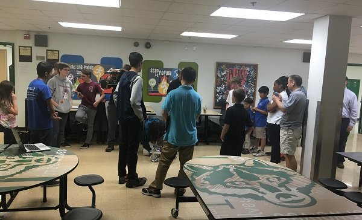

Every year W.B. Travis, a 4-8 has an open house for magnet schools to attend and convince students that $school1 is better than $school2. And, since it is Iron Reign's former school, we attend and try to pull students SEM. We present to about 5 groups and field questions from parents.
Unsurprisingly, we ran into issues, just like we always do. First, our chain kept on falling off of our new robot as we had forgotten to re-enforce the motor and wheel mounts. So, while our robot was still impressive, it was a bit disappointing. Second, we had our color-following robot, but we had forgotten the controller phone. Despite all this, Jayesh gave a great presentation to the prospective freshmen.